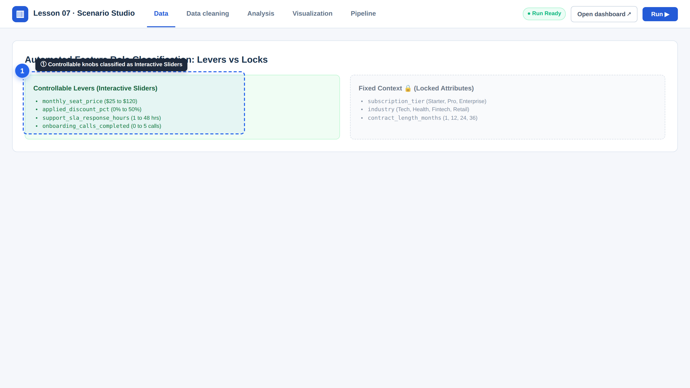
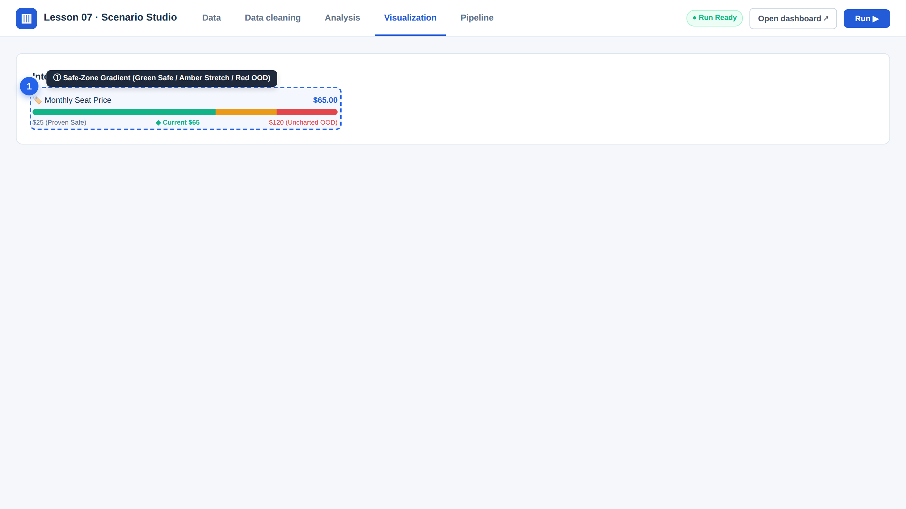
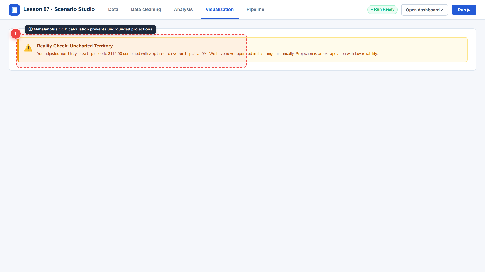
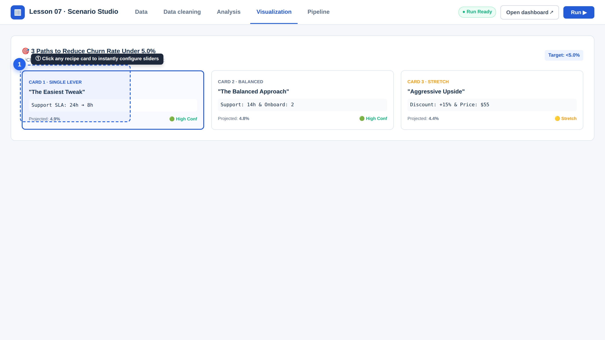

Lesson 07 / SaaS Churn Recovery
"What-If" Studio & Recipe Cards.
Simulate counterfactual strategy decisions in real time with sub-100ms response. Classifies levers vs. locked context, enforces 3-zone safe slider tracks, and recommends goal-seeking action cards.
What-If Studio
Levers vs Locks
In-memory surrogate cache
Safe-zone slider tracks
DiCE counterfactual recipes
Part 1 · The Analytical Problem
Static dashboards cannot answer future "What If" questions.
Traditional BI reports tell leaders what happened in the past, but offer no guidance when asking: "If we reduce customer support SLA from 24 hours to 8 hours, will churn drop below 5%? What if we lower monthly seat price instead?" Furthermore, unconstrained calculators let users drag sliders into absurd fantasy territory (e.g. $0 price), generating dangerously misleading projections.
In this lesson, we analyze 3,500 active B2B SaaS subscriber accounts. Our objective is to configure an interactive What-If scenario studio that separates controllable levers from locked customer attributes, bounds sliders within proven historical safe zones, and generates 3 actionable counterfactual recipe cards.
Part 2 · The Visual Concept
The four pillars of grounded simulation.
1. Levers vs. Locked Context
The system automatically distinguishes controllable operational levers (e.g. monthly_seat_price, support_sla_response_hours) from immutable customer context (e.g. subscription_tier, industry). Sliders are rendered only for variables leadership can actually change.
2. 3-Zone Safe Slider Tracks
Every slider features a tri-color gradient track: Green (Proven safe zone, \(\le 1.5\sigma\) of training data), Amber (Stretch zone, \(1.5\sigma - 2.5\sigma\)), and Red (Uncharted Out-Of-Distribution, \(>2.5\sigma\)). Venturing into red triggers real-time Reality Check alerts.
3. In-Memory Surrogate Caching
Rather than executing slow multi-second Python re-trainings, the backend fits a lightweight surrogate model cached directly in memory. Sliders respond in under 50ms with instant numerical feedback.
4. Action Recipe Cards
Using counterfactual optimization (DiCE algorithm), the engine generates 3 distinct goal-seeking packages to achieve target churn (<5.0%): Card 1 (The Easiest Tweak), Card 2 (The Balanced Approach), and Card 3 (Aggressive Upside).
Part 3 · Data Dictionary
SaaS Subscriber Churn Dataset.
3,500 subscriber accounts
7.6% baseline churn rate
4 controllable levers
3 locked context fields
Part 4 · Step-by-Step Instructions
Build the Scenario Studio in WPS-AI.
01
Upload Data & State Churn Target
Launch the studio via python launcher.py. Create a new project, upload saas_churn_pricing.csv, and paste the following into the Business context field:
Each row is one SaaS subscription account. churned is 1 if the customer cancelled within 12 months. monthly_seat_price and support_sla_response_hours are controllable business levers. subscription_tier and industry are locked customer attributes. Target is reducing churn below 5.0%.
02
Prompt the AI Stage Creator
In the Chat composer, set the context to Project and send the following prompt:
Build an interactive What-If scenario studio for customer churn.
Classify features into levers vs locks.
Pre-compute safe slider zones and fit an in-memory surrogate model for fast real-time counterfactual simulation.
Generate 3 actionable recipe cards to achieve churn < 5.0%: Easiest Tweak, Balanced Approach, and Aggressive Upside.
Attach reality check warnings when levers venture into uncharted OOD regions.
Save stages; I will select Run.
Review the proposed changes and select Apply. Then select Run ▶ in the top header.
Part 5 · Annotated Screenshot Reference
Compare against the verified Studio UI.
Use these full-browser annotated captures to verify each stage of your execution:

Annotated Guidance: ① The system automatically classifies 4 attributes as Controllable Levers (Price, Discount, SLA, Onboarding) and locks immutable demographic fields (Tier, Industry, Contract length).

Annotated Guidance: ① Sliders display green safe zones, amber stretch boundaries, and red uncharted territory based on historical training density.

Annotated Guidance: ① Dragging sliders into extreme territory ($115 price with 0% discount) instantly triggers an Amber Reality Check warning calculating high Mahalanobis distance.

Annotated Guidance: ① Three 1-click counterfactual recipe cards provide verified paths to achieve <5.0% churn. Clicking any card automatically snaps the sliders to those exact parameters.
Part 6 · Interactive Scenario Simulator
Try the live surrogate model below.
Drag the sliders or select a recipe card to observe instant counterfactual updates and safe-zone monitoring:
Projected 12-Month Churn
🟢 High Confidence Forecast
All sliders operating within proven historical training distribution.
Simulation Response Latency
⚡ < 20ms (In-Memory Surrogate)
🎯 Recommended Goal-Seeking Recipes (Target: Churn < 5.0%)
Select any card to automatically configure levers:
CARD 1 · SINGLE LEVER
"The Easiest Tweak"
Support SLA: 24h ➔ 8h
Projected: 4.9%
🟢 High Conf
CARD 2 · BALANCED
"The Balanced Approach"
SLA 14h & Calls 3
Projected: 4.8%
🟢 High Conf
CARD 3 · STRETCH
"Aggressive Upside"
Price $55 & Discount 25%
Projected: 4.4%
🟡 Stretch
Part 7 · Troubleshooting
What to check if numbers differ.